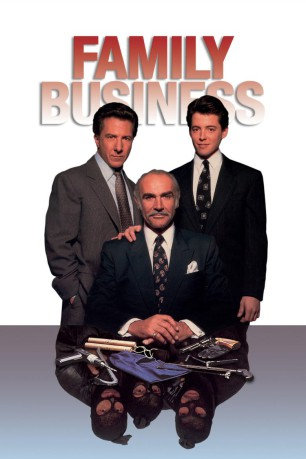

#8330 Family Business
 
 IMDB-Wertung: 5.7 / 10
IMDB-Wertung: 5.7 / 10  Tomatometer: 38
Tomatometer: 38  Metascore: 0
Metascore: 0 
Der ehemalige Chemiestudent Adam überredet seinen Großvater, den Überzeugungsgauner Jessie McMullen, zu einem todsicheren Bruch. Für eine Million Dollar sollen aus einem Labor ein neu entwickeltes Serum nebst wichtigen Unterlagen gestohlen werden. Als dritter im Bunde entschließt sich Adams Vater Vito, der nach einer kriminellen Jugend auf ehrliche Weise zu Wohlstand gekommen ist, bei dem Coup mitzumachen. Der Einbruch glückt, doch Adam wird von der Polizei verhaftet. Der Auftrag erweist sich als Falle, um die Wirkungslosigkeit des Serums zu vertuschen. Die Haftstrafen von Vito und Adam werden zur Bewährung ausgesetzt, Jesse erhält lebensl��nglich. Er stirbt im Gefängnis...
Jahr: 1989
Dauer: 113 Minuten
FSK: 12
Land: USA Studio: TriStar PicturesTonspuren:
Untertitel:
Auflösung: 1080p (1920x1040) Größe: 8140 MB
Genre: Drama, Krimi
Regisseur:  Sidney Lumet
Sidney Lumet
Drehbuch: Vincent Patrick
Soundtrack: Cy Coleman
Darsteller:
 Sean Connery als Jessie
Sean Connery als Jessie Dustin Hoffman als Vito
Dustin Hoffman als Vito Matthew Broderick als Adam
Matthew Broderick als Adam- Rosanna DeSoto als Elaine
- Janet Carroll als Margie
- Victoria Jackson als Christine
- Bill McCutcheon als Doheny
 Deborah Rush als Michele Dempsey
Deborah Rush als Michele Dempsey Rex Everhart als Ray Garvey
Rex Everhart als Ray Garvey James Tolkan als Judge
James Tolkan als Judge Wendell Pierce als Prosecutor
Wendell Pierce als Prosecutor Jack O'Connell als Police Lieutenant
Jack O'Connell als Police Lieutenant John Capodice als Tommy
John Capodice als Tommy Luis Guzmán als Torres
Luis Guzmán als Torres- William Preston als Flask Mourner
- John Connell als Wake 'Suit' Cop
 Willie C. Carpenter als 'Caper' Cop
Willie C. Carpenter als 'Caper' Cop BD Wong als Jimmy Chiu
BD Wong als Jimmy Chiu Alberto Vazquez als Prisoner #1
Alberto Vazquez als Prisoner #1 David Warshofsky als Parking Attendant
David Warshofsky als Parking Attendant- John E. Byrd als Van Guard
 Joe Lisi als Desk Sergeant
Joe Lisi als Desk Sergeant David Hummel als Restaurant Patron (uncredited)
David Hummel als Restaurant Patron (uncredited) Nick Vallelonga als Arresting Guard (uncredited)
Nick Vallelonga als Arresting Guard (uncredited)- Marilyn Cooper als Rose
- Salem Ludwig als Nat
- Marilyn Sokol als Marie
- Thomas A. Carlin als Neary
- Tony DiBenedetto als Phil
- Isabell O'Connor als Judge
- James Carruthers als Clerk - 1st Court
- Dermot A. McNamara als Casket Mourner
- Raymond H. Bazemore als 'Caper' Guard
- Conard Fowkes als 'Caper' Detective
- Hal Lehrman als Assistant D.A.
- Nick Discenza als Detective #1
 Ed Crowley als Charlie
Ed Crowley als Charlie- Arthur Pierce als Convict
- Jose Machado als Prisoner #2
- June Stein als Diner Waitress
- Elizabeth A. Reilly als Phil's Girlfriend
- Tom Dillon als Tenor
- Paul Forrest als Tenor #2
- Karen Needle als Denise
- Susan Korn als Margo
- Aideen O'Kelly als Widow Doheny
- George Kodisch als Wake Cop #1
- Mary T. Fay als Lady Mourner #1
- Patricia Fay als Lady Mourner #2
- Ronald Rand als Assistant DA (uncredited)
Datei: X:\1989\Family Business (1989, FSK12, 1920x1040).mkv seit 24.02.2018
Festplatte: HD 1987-1991
 Es gibt insgesamt 54 Filme in der Gruppe '1989'
Es gibt insgesamt 54 Filme in der Gruppe '1989'